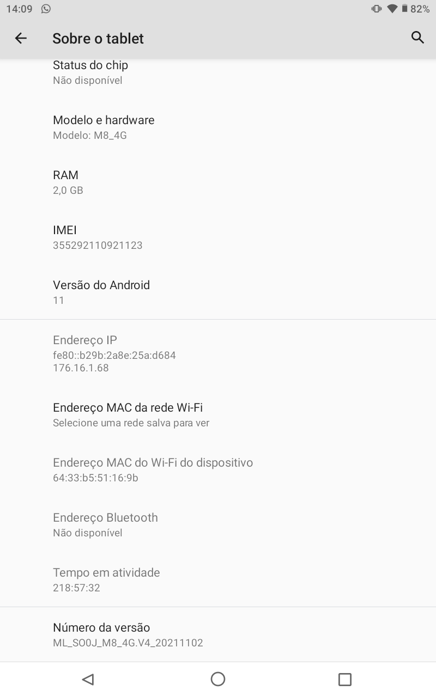
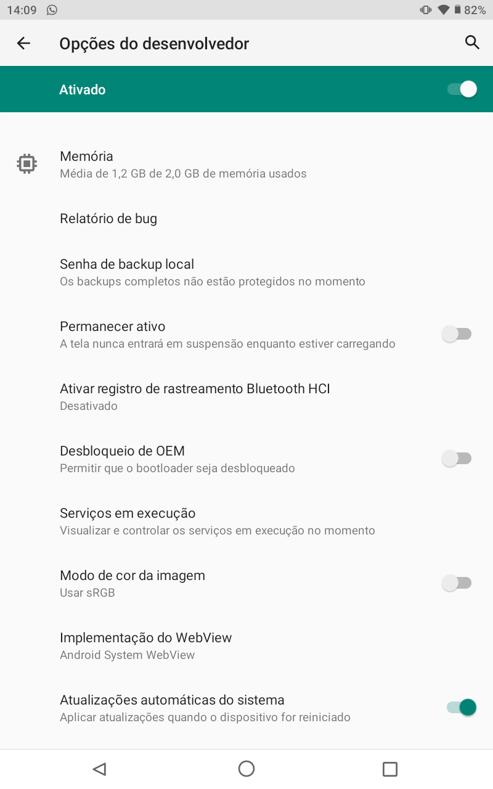
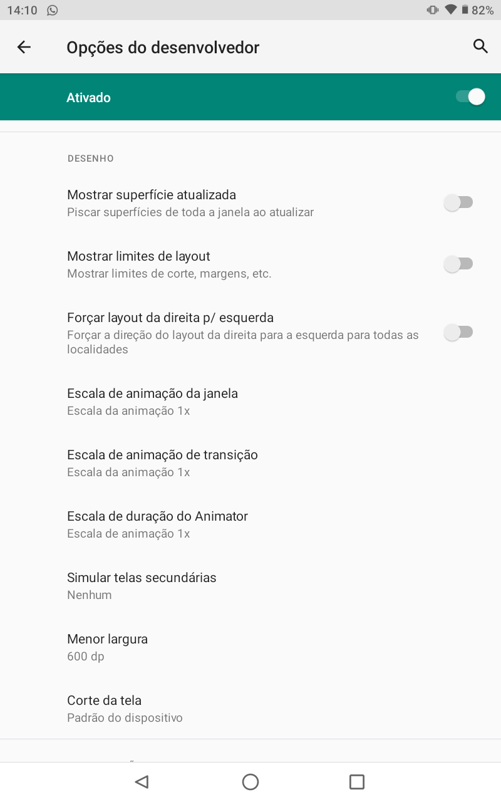
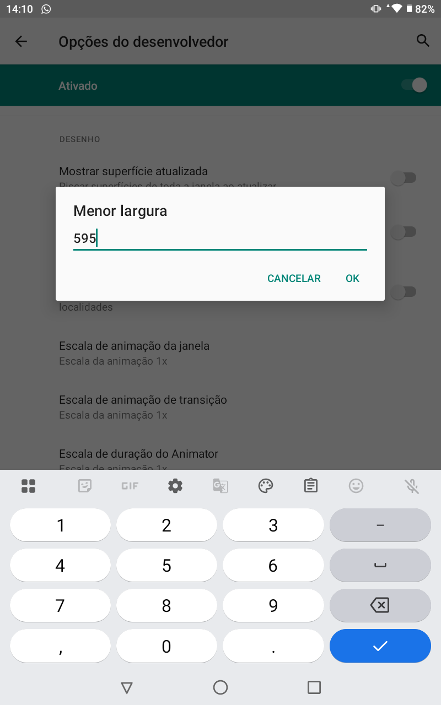

Passo 1
Ativar Opções do Desenvolvedor
Abra Configurações → Sobre o tablet → Informações do software → toque 7 vezes em Número da versão.
Caso solicite a senha ou pin, informe-a para confirmar a alteração.

Passo 2
Abrir Opções do Desenvolvedor
Volte às Configurações e entre em Sistema (ou Configurações adicionais) → Opções do desenvolvedor.

Passo 3
Localizar Menor largura
Role até a seção Desenho e toque em Menor largura.

Passo 4
Alterar o valor
Anote o valor atual, digite o novo valor e confirme em OK.
Passo 5
Validar
Verifique se a interface ficou conforme esperado. Caso necessário, restaure o valor original.